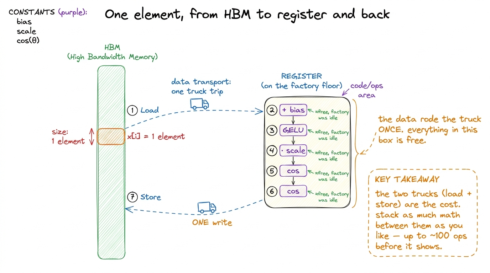
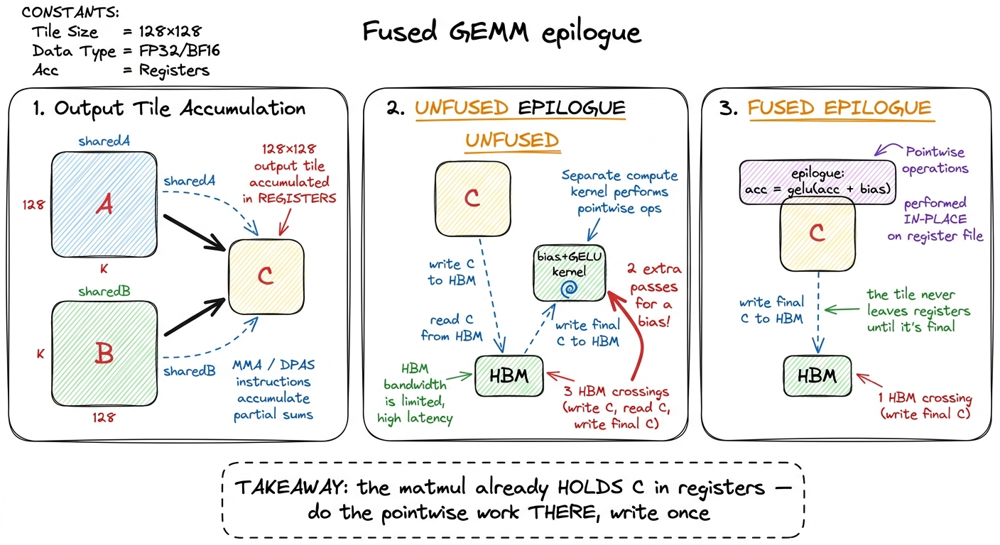
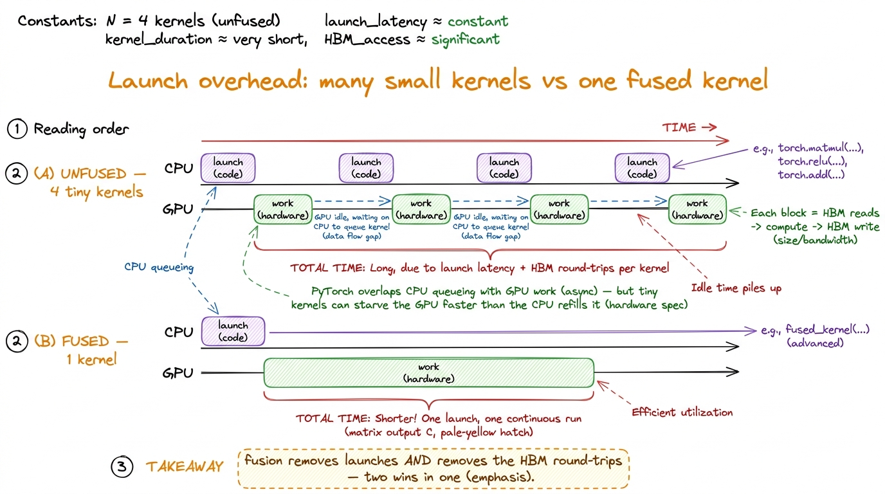
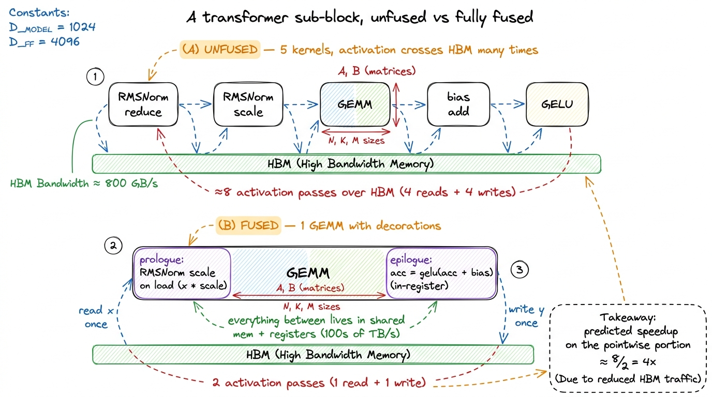

Operator fusion
Let me start with the most basic question there is, the one every GPU tutorial skips past: what actually takes time when a neural network runs? Not "which layer," but physically — where do the nanoseconds go? Most people, myself included the first time, assume the answer is arithmetic. The GPU is a machine for doing math, so surely the math is what costs. That guess is wrong for a huge fraction of a real network, and understanding why it's wrong is the single most useful thing you can learn about kernels.
So here is the frame for this whole article. A GPU has two very different resources. It has arithmetic units that do multiplies and adds unbelievably fast, and it has a pipe to its main memory (HBM) that moves bytes much more slowly. Every operation you run leans on one of these two resources more than the other. And it turns out that almost every cheap operation in a network — the bias adds, the activations, the residual adds, the normalizations — leans almost entirely on the slow one, the memory pipe. They are not limited by math. They are limited by how fast the GPU can shovel their data in and out of memory.
Once you believe that, one optimization becomes obvious and enormous: stop shoveling the same data back and forth. That's operator fusion. This article is about why fusion works, exactly how much it buys you, where it applies in a real transformer, and — most importantly — how to predict the speedup on the back of a napkin before you write a single line of code.1 The argument here is a direct rebuild of Horace He's "Making Deep Learning Go Brrrr From First Principles". The x.cos().cos() example, the "~100 operations" threshold, and the factory/warehouse framing are his; the H100 arithmetic and the figures are ours. If you've read the three regimes, you already have the skeleton — this article puts muscle on it.
A factory and a warehouse
Before any code, I want one picture in your head that we'll reuse the whole way down. Think of the GPU as a factory sitting next to a warehouse.
The factory floor is where the arithmetic happens — the multiply-add units, the tensor cores. It is astonishingly productive. The warehouse is HBM, the GPU's main memory, where all your tensors actually live. Between them runs a single road, and trucks drive raw materials from the warehouse to the factory and finished goods back. That road is the memory bandwidth.
 figure rendering · The GPU is a hyper-efficient factory bottlenecked by the road to its w
figure rendering · The GPU is a hyper-efficient factory bottlenecked by the road to its wHere's the thing that makes modern GPUs weird. Over the last decade the factory got upgraded far faster than the road. Look at an H100: the factory can do about 989 TFLOP/s of BF16 arithmetic through its tensor cores, but the road pulls only about 3.35 TB/s from HBM3. Horace He's A100 numbers tell the same story in a sentence: "you can load in 400 billion numbers in the same time that the GPU can perform 20 trillion operations." The factory is roughly fifty times more productive than the road can keep up with.
So the natural question is: when does the road become the bottleneck? And the answer is a single ratio.
The ridge point: how much math per byte
Let's derive it from scratch, because the number matters. Suppose an operation reads and writes some bytes, and does some FLOPs of arithmetic. The factory takes FLOPs ÷ 989e12 seconds to do the math. The road takes bytes ÷ 3.35e12 seconds to move the data. The GPU overlaps these — it computes while the trucks drive — so the operation takes whichever is longer.
The two are exactly balanced when:
FLOPs / 989e12 = bytes / 3.35e12Rearrange, and the factory-vs-road balance depends only on FLOPs / bytes — the arithmetic intensity of the op. Do the division: 989e12 / 3.35e12 ≈ 295. So the break-even point is about 295 FLOPs per byte.2 Element-wise ops don't even use the tensor cores — they run on the CUDA cores, whose FP32 peak is far lower (tens of TFLOP/s, matching He's "19.5 TFLOP/s for non-matmul ops" on the A100). But that only strengthens the conclusion: divide by a smaller peak and the ridge for pointwise ops actually drops, yet these ops still sit thousands of times below it. Which peak you pick doesn't change the story.
That number, ~295, is the ridge point. Above it, an op does so much math per byte that the factory is the bottleneck — you're compute-bound. Below it, the road is the bottleneck — you're memory-bound, and the factory sits idle waiting for trucks.
Now do the tiny by-hand example that makes this concrete. Take a bias add: y = x + b, one element at a time. Per element in FP32 you read 4 bytes of x, write 4 bytes of y — call it 8 bytes moved — and you do exactly 1 FLOP (the add). Arithmetic intensity: 1 / 8 = 0.125. Compare that to the ridge of 295. You are about 2,400× below the break-even. This op is not "somewhat" memory-bound. It is almost pure memory movement with a rounding error of arithmetic stapled on.
 figure rendering · Fusing pointwise ops keeps you deep in the memory basin — the win is h
figure rendering · Fusing pointwise ops keeps you deep in the memory basin — the win is hSit with that figure, because it defines the rest of the article. Every cheap op in your network — bias, GELU, residual, dropout, layernorm — lives in that pale-blue basin on the left, thousands of times below the ridge. For those ops, wall-clock time is very nearly proportional to bytes moved through HBM, and almost nothing else. The math is free. The trucks are the clock.
That single fact is the lever. If time ≈ bytes moved, then to go faster you move fewer bytes. Fusion is the cleanest way to move fewer bytes.
The problem: activations commute to HBM and back
Let's watch the waste happen. Picture the simplest possible chain. You have an activation tensor x and you want y = gelu(bias + x). Written as two library calls — one add, one GELU — the GPU does the following, and I want you to count the trucks.
Kernel one launches. It reads the whole tensor x from HBM (truck in), adds the bias in the factory, and writes the whole tensor back to HBM as a temporary (truck out). Kernel two launches. It reads that same temporary back from HBM (truck in), applies GELU, and writes the result y out again (truck out).
Count the road traffic. For an M × N activation that is four full passes over the tensor: read, write, read, write. Now ask the Socratic question — how many of those four were actually necessary? Only two. The very first read of x and the very last write of y are real; you have to get the input and you have to produce the output. But the write at the end of kernel one and the read at the start of kernel two are pure overhead. That intermediate bias + x tensor never needed to be seen by anyone except the next op, GELU. We paid to store it in the slowest memory on the entire chip and then, nanoseconds later, paid again to fetch the exact same bytes back.
 figure rendering · The unfused chain pays for the intermediate tensor twice; fusion delet
figure rendering · The unfused chain pays for the intermediate tensor twice; fusion deletThat picture is the entire idea, and it's worth stating in plain words. Fusion means: read the inputs once, do all the element-wise work while the data is sitting in registers on the factory floor, and write the final result once. The intermediate bias + x is produced and consumed inside a register — it never touches HBM, never rides a truck. Horace He puts it exactly right: "instead of writing our data to global memory just to read it again, we elide the extra memory accesses by performing several computations at once."
Why fusion buys a clean 2× — and why it's only bandwidth
Here is the part that trips people up, so let's slow down on it. Fusion does not save you any arithmetic. Zero. The fused kernel does the exact same bias-add and the exact same GELU transcendental as the two unfused kernels did. Not one FLOP fewer. What it saves is bytes moved — it went from 4 passes to 2.
And because these ops are memory-bound, bytes moved is the only thing that was ever on the clock. Halve the bytes, halve the time. That's where the "clean 2×" comes from, and now you can see it isn't magic or a compiler trick — it's just the ratio of pass counts, 4 / 2 = 2.3 In practice you'll measure a bit under 2× — call it 1.7–1.9×. The unfused version had a small edge you're giving up: two kernels means two chances for the intermediate to stay resident in L2 cache instead of round-tripping all the way to HBM, and for tiny tensors the launch overhead dominates so byte-counting under-predicts the win entirely. The 2× is the clean asymptotic story; the real number is where the interesting details live, which is exactly the gap the last section tells you to chase.
This leads to a consequence that genuinely surprised me the first time I benchmarked it. Consider x.cos().cos() — cosine applied twice. Naively you'd expect it to cost twice as much as a single x.cos(), because it's twice the transcendental work, right? Wrong. Fused, x.cos().cos() reads the tensor once and writes it once, exactly like x.cos() does. The second cosine happens in a register, on data the factory already holds. And since the factory was idle anyway — waiting on trucks — that second cosine is essentially free.
A fusedx.cos().cos()takes nearly the exact same wall-clock time asx.cos()by itself.
Read that twice. It says the arithmetic doubled and the runtime didn't move. That's only possible because the runtime was never about arithmetic — it was about the two HBM passes bracketing the op, and those didn't change.
The same logic explains a fact that confuses everyone the first time they profile activations: gelu and relu cost about the same, even though, as He says, gelu "obviously consists of many more operations than relu." A GELU involves an erf or a tanh approximation — many FLOPs. A ReLU is a single max(x, 0). Yet they benchmark nearly identically. Why? Because neither is limited by its arithmetic. Both read the tensor once and write it once, and that — the two HBM passes — is what you're timing. The math underneath is happening in the idle gaps of a memory-bound kernel, so it's invisible on the clock.
He gives a rule of thumb worth memorizing. On an A100 with FP32, "until you're doing about a hundred operations in your unary operator, you'll be spending more time performing memory accesses than actual compute." A hundred operations per element, all fused into a single read-and-write, before the arithmetic even begins to matter. Most activation functions are a handful of ops. You are nowhere close. You have enormous headroom to fuse more math in for free before you'd ever tip into compute-bound.4 On the H100 the compute-to-bandwidth ratio is even more lopsided than the A100's, so the threshold is higher, not lower — you can fuse even more pointwise work before the arithmetic starts to show up on the clock. Every GPU generation widens this gap.

figure rendering · Once an element is in a register, piling on more pointwise math is neaNotice what that zoom-in shows and the roofline can't: the reason fusing five ops still keeps you memory-bound. Yes, five FLOPs per byte is 5× the intensity of one FLOP per byte — the dot slides right on the roofline. But it slides from 0.1 to 0.5, and the ridge is at 295. You never come close to crossing it. The reason fusion is fast is not that it makes the kernel efficient in the roofline sense — it stays deep in the basin. It's fast because it reduces the total bytes the memory-bound kernel has to move: from 2k passes for k unfused ops down to a single read and a single write, no matter how large k gets.
Fused epilogues: gluing pointwise work onto the matmul
So far we've fused pointwise ops to each other. But the single most valuable fusion in a transformer is fusing them onto the matmul that produced the data. This is the fused epilogue, and it's the reason libraries like cuBLASLt and CUTLASS expose an "epilogue" hook in the first place.
Let's reason about why the opportunity exists. Think about what a tiled GEMM already does at the end (if you've followed the GEMM ladder, this is the last step of every kernel there). It accumulates each output tile in registers — the C tile lives right there on the factory floor as the k-loop runs — and the very last thing the kernel does is write that finished tile from registers back to HBM. That write is unavoidable; the result has to land somewhere.
Now here's the waste. An unfused linear layer, having just written the biasless matmul result to HBM, immediately launches a separate bias-add kernel. That kernel reads the result back from HBM, adds the bias, writes it out again. Two extra HBM passes — to add a bias! And the tragedy is that the matmul kernel had the output tile sitting in registers, one instruction away from being able to add the bias for free, right before it wrote. We threw that opportunity away by ending the kernel.

figure rendering · A fused epilogue does the bias and activation while the output tile isThe epilogue runs in the window between "tile finished accumulating" and "tile written to HBM." Whatever pointwise transform you can express — acc = gelu(acc + bias), a scale, a clamp, a residual add, a cast to FP8 — you fold into that window. The output tile is written to HBM exactly once, already in its final form. In pseudo-CUDA the change is almost nothing:
// after the k-loop, `acc[i][j]` holds the C tile in registers.
#pragma unroll
for (int i = 0; i < TM; ++i)
for (int j = 0; j < TN; ++j) {
float v = acc[i][j] + bias[col + j]; // fused bias
v = gelu(v); // fused activation
C[(row + i) * N + col + j] = v; // the ONE write we were going to do anyway
}Look at that last line. C[...] = v is a write we were always going to do — it's the matmul's own output write. The bias and the GELU just changed the value being written, at no extra HBM cost. There is no extra kernel launch, no intermediate tensor, no second read. In PyTorch you express the same thing by letting torch.compile (or a hand-written Triton kernel) capture the linear → bias → gelu subgraph; the compiler's whole job here is to recognize the chain and emit one kernel with the epilogue baked in.5 This is also why F.linear(x, w, bias) can be faster than F.linear(x, w) + bias: the former lets the library fuse the bias into the GEMM epilogue, while the latter may materialize the biasless result to HBM first. "May," because a good compiler will fuse it anyway — but you should not rely on it noticing.
Why the CPU can't save you: the overhead trap
Before we go further, a quick detour that explains why fusion also kills a second cost you might not have counted: kernel launch overhead. Every separate kernel is a separate command the CPU has to issue to the GPU. And the CPU is glacially slow compared to the GPU. He's numbers are brutal: Python does about 32 million additions per second, while an A100 does 312 trillion FLOP/s — "in the time that Python can perform a single FLOP, an A100 could have chewed through 9.75 million FLOPs."

figure rendering · Many tiny kernels can starve the GPU while the CPU scrambles to queuePyTorch normally hides this: it queues kernels asynchronously, so while the GPU chews on kernel one the CPU is already dispatching kernel two. But that only works if each kernel gives the GPU enough work to stay busy while the CPU catches up. When your kernels are tiny memory-bound pointwise ops that finish in microseconds, the CPU can't queue launches fast enough, the GPU floor goes idle between kernels, and you become overhead-bound — bottlenecked by neither the factory nor the road, but by the CPU issuing commands. Fusion collapses four launches into one, so it fixes this at the same time it fixes the byte traffic. Two wins, one change.
RMSNorm before a matmul: the read-side fusion
Epilogues fuse pointwise work onto the output of a matmul. The mirror-image trick fuses it onto the input, and it's just as valuable. Take the LLaMA-style transformer block, where every matmul is preceded by an RMSNorm.
Unfused, that's three separate steps. First a reduction kernel computes each row's mean-square. Then a pointwise kernel normalizes and scales — it reads x from HBM and writes x_norm back to HBM. Then the GEMM reads x_norm back in from HBM. Once again the heavy activation tensor x_norm gets written to HBM by the norm kernel and read straight back from HBM by the GEMM — one more pointless round-trip of the entire activation.
The read-side fusion folds the normalization into the GEMM's loading stage. When the matmul kernel streams a tile of the input into shared memory (the shared-memory step of the ladder), it applies the RMSNorm scale on the way in, before the data ever reaches the tensor cores. x_norm is never materialized in HBM at all — it exists only transiently in shared memory and registers, on the factory floor, and is consumed immediately.6 RMSNorm needs a full-row reduction (the mean of squares) before it can scale any element, so the cleanest version computes the per-row statistic in a tiny preceding pass and fuses only the scale into the GEMM load. The heavy activation tensor still avoids its round-trip; only a vector of per-row scalars — a few KB — crosses HBM.
Now put the two sides together. A LLaMA sub-block unfused looks like: RMSNorm-reduce, RMSNorm-scale, GEMM, bias-add, activation — five or six kernels, each round-tripping the activation. With read-side fusion on the front and epilogue fusion on the back, it collapses to essentially one GEMM with decorations: the norm is applied as the tile loads, the bias and activation as the tile stores. The activation tensor crosses HBM the minimum number of times — read the input once, write the output once — and everything in between happens on the factory floor.

figure rendering · Fusing the norm onto the load and the bias+activation onto the store cHow to see the win before you write it
Now the payoff — the discipline that makes all of this predictable instead of magical. It's the same predict-then-measure loop as the rest of the site, and for memory-bound fusion it's especially clean, because time is nearly linear in bytes moved.
Before fusing anything, count the passes. Write down how many times each byte of your activation crosses HBM in the unfused version, then how many times it would cross in the fused version. The ratio of those two counts is your predicted speedup. That's the whole method, and it works because these kernels are deep in the memory basin where wall-clock ≈ bytes moved.
Do it on a real chain. linear → bias → gelu → dropout is four kernels. Count the passes: the linear writes its output (1) and each subsequent pointwise op reads then writes the activation — bias reads (2) writes (3), gelu reads (4) writes (5), dropout reads (6) writes (7) — plus the linear's own input read. Call it roughly eight HBM passes over the activation. Fused into one GEMM-with-epilogue, it's closer to two (read input, write final output). Ratio: 8 / 2 = 4. So predict about 4× on the pointwise portion, then confirm it in Nsight Compute — where the memory chart should drop from saturated DRAM throughput down to a fraction of it, and the kernel count in your trace should collapse from four to one.
Here's the mindset that separates people who understand kernels from people who guess. When your measured speedup matches the pass-count ratio, you understand the kernel — the model in your head is correct. When it falls short, you've found something worth knowing: a tensor that was already sitting in L2 cache and never really hit HBM, a launch you forgot to count, an op the compiler quietly refused to fuse, a shape too small to be bandwidth-bound at all. That gap is the interesting part. Chase it and you learn where your mental model was wrong.
Why this is the first tool, and where it leads
I want to end on why fusion is the optimization I'd teach first, above any tensor-core trick or precision cut. It's because fusion is the tool that keeps paying as the hardware moves. Every GPU generation, compute grows faster than bandwidth. The factory gets upgraded; the road lags. The ridge point climbs — 295 FLOPs/byte on the H100 today, higher on the B200 tomorrow — and as it climbs, more and more of your network slides into the memory-bound basin where fusion lives. The set of ops that fusion helps is growing, not shrinking. Betting on fusion is betting on a trend that hasn't reversed in a decade.
And this same idea — "never materialize the intermediate in HBM" — is the seed of the two biggest kernels in modern inference. The write side of this article leads into quantized epilogues: fold the cast to FP8 into the GEMM's epilogue, so the output leaves the factory already half-sized and every downstream op moves half the bytes. The read side leads into the one everybody knows — FlashAttention — which is nothing but this article's idea applied to the softmax(QKᵀ)V chain. The intermediate it refuses to write to HBM is the N × N attention matrix, which for long sequences is enormous. Same lever, same basin, same napkin math: read once, do all the work on the factory floor, write once. Once you see fusion clearly, FlashAttention stops being a mysterious paper and becomes an obvious consequence.
That's the whole point of starting here. Everything downstream is this one picture — the factory, the warehouse, and the trucks you refuse to send.